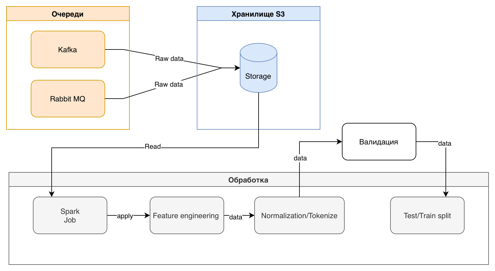
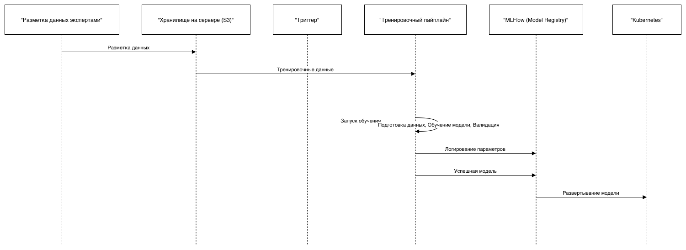
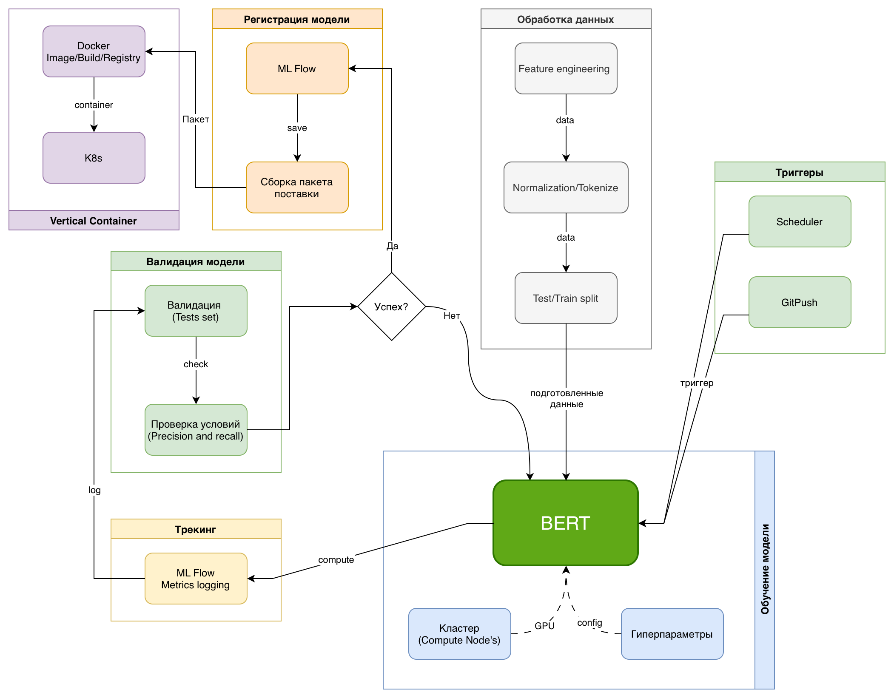

Домашнее задание: Проектирование ML-системы — Задание 17
Курс: Проектирование систем машинного обучения
Уровень: 2 курс магистратуры
Вариант: 17
Команда: ...
Тема: Обнаружение языка ненависти в комментариях
Задание: Спроектируйте систему для обнаружения и пометки языка ненависти в комментариях на новостном сайте. Сосредоточьтесь на обработке текста и учете контекста
Секция 1. Введение и постановка задачи
В современном цифровом медиа-пространстве комментарии являются ключевым драйвером вовлеченности (User Engagement), превращая пассивное чтение новостей в активную дискуссию. Однако с ростом аудитории неизбежно растет объем токсичного контента и «языка вражды» (Hate Speech).
Ручная модерация при наших объемах трафика становится экономически нецелесообразной и технически невозможной. Пропуск токсичных комментариев несет прямые репутационные риски и угрозу оттока аудитории, в то время как чрезмерная блокировка (False Positives) вызывает фрустрацию лояльных пользователей.
Целью работы является проектирование масштабируемую ML-систему для автоматического обнаружения и маркировки Hate Speech в режиме реального времени. Ключевой особенностью системы должна стать способность анализировать не только отдельные ключевые слова, но и семантический контекст (сарказм, неявная агрессия, учет истории треда), обеспечивая высокую точность классификации.
Бизнес-цели и метрики успеха
Внедрение системы будет направлено на достижение следующих бизнес-показателей:
-
Снижение операционных расходов (OpEx) на модерацию:
Цель: Автоматизировать обработку 95%+ входящего потока комментариев, оставляя для ручного разбора (Human-in-the-loop) только сложные граничные случаи (edge cases) с низкой уверенностью модели. -
Удержание пользователей (Retention Rate) и вовлеченность:
Цель: Снизить отток пользователей, вызванный токсичной средой, и повысить метрику «Время на сайте» (Time Spent), создавая безопасное пространство для дискуссий. (Чистые комментарии -> больше конструктивных дискуссий).
Технические требования и ограничения (SLA/SLO)
Проектируемая система относится к классу High Load / Real-time ML Inference. Архитектура должна строго соответствовать следующим нефункциональным требованиям:
- Задержка (Latency): Время отклика API — не более 385 мс. В эти 385 мс входит: сетевой оверхед, препроцессинг текста, инференс ML-модели и запись результата в БД.
- Пропускная способность (Throughput): Архитектура должна выдерживать пиковую нагрузку (Peak Load) в 18,225 RPS без деградации сервиса.
- Аудитория: Система должна поддерживать 3,207,228 DAU (Daily Active Users)
- Отказоустойчивость (Availability): Система должна быть спроектирована по принципу Shared-Nothing с отсутствием единой точки отказа (SPOF) для обеспечения доступности 99.99%.
- Контекстуальность: Алгоритм должен учитывать контекст обсуждения, чтобы минимизировать ложные срабатывания на лексике, которая может быть допустимой в определенном контексте (например, цитирование новостей), но недопустимой в качестве оскорбления.
Секция 2. Формулировка ML-задачи и выбор модели
1. Определение ML-задачи
Задачу можно сформулировать как Многоклассовая Классификация (Multiclass Classification). Это позволяет моделировать различные нюансы агрессии или типы ненависти, которые должны быть проанализированы (например, сексизм, гомофобия, ксенофобия, или классификация по степени токсичности).
Целевая переменная: Дискретная метка, представляющая категорию обнаруженного контента. Это будет один из классов: «Сексизм», «Гомофобия», «Ксенофобия», «Лукизм» или «Другое».
Для обучения модели, способной выполнять семантический и контекстуальный анализ, необходим размеченный набор данных. Типы данных необходимые системе:
- Текстовые данные: Основные входные данные — это текстовые сообщения, комментарии, посты.
- Контекстуальные данные: Поскольку требуется учет истории обсуждения/треда (контекста), данные должны включать не только изолированные сообщения, но и последовательности сообщений или векторные представления предыдущего контекста.
- Размеченные данные: Набор данных должен быть вручную или автоматически размечен метками, соответствующими целевой переменной (например, "токсичный/нетоксичный", или "сексизм/нейтральный" и т.п.).
2. Выбор модели
Для решения этой задачи классификации текстовых данных могут быть применены как классические методы машинного обучения, так и современные модели глубокого обучения, особенно те, что специализируются на обработке естественного языка (NLP).
Рассмотрим 2 подхода
A) Модели на основе трансформеров (Transformers):
BERT (Bidirectional Encoder Representations from Transformers): Модели на основе архитектуры трансформеров, такие как BERT, показывают превосходную производительность в задачах классификации текста. Они способны улавливать контекст и семантические связи между словами, что критически важно для обнаружения неявной агрессии и сарказма (ключевая особенность вашей системы).
- Перимущества: Высокая производительность и точность в задаче классификации текста, использование трансферируемого обучения (Transfer Learning), обработка нюансов языка.
- Недостатки: Вычислительная ресурсоемкость, может отражать и усиливать доминирующие культурные нормы и демографические, социально-экономические или политические предубеждения.
B) Рекуррентные и сверточные нейронные сети:
Bi-LSTM (Bidirectional Long Short-Term Memory): Двунаправленная LSTM, которая учитывает контекст как до, так и после текущего слова, что важно для семантического анализа.
- Преимущества: Эффективен для последовательных данных, учитывает контекст, высокая точность
- Недостатки: Сильная зависимость от контекста, нестабильность при изменении признаков (добавлении или уменьшении)
Сверточные нейронные сети (CNN): могут распознавать основные свойства текста, такие как n-граммы и фразы, без сложной разработки признаков. В некоторых исследованиях CNN демонстрируют более высокую производительность для обнаружения токсичности, чем другие модели.
- Преимущества: Эффективность в извлечении признаков, способность оценивать короткие цепочки (большинство флуда и оскорблений в сети интернет), высокая производительность.
- Недостатки: Предназначется лучше для изображений, снижение производительности.
Выбор:
Модель BERT подходит лучше всех для решения данной задачи, поскольку она необходима для выполнения ключевых требований к качеству модели (семантический и контекстуальный анализ), несмотря на серьезные технические ограничения, связанные с задержкой и пропускной способностью.
Для соответствия жестким бизнес-целям и техническим требованиям, предъявляемым к системе класса High Load / Real-time ML Inference, необходимо использовать предобученную модель BERT в сочетании с передовыми методами MLOps и системного проектирования.
Секция 3. Проектирование архитектуры
1. Высокоуровневая архитектура системы
Высокоуровневая архитектура (HLD) показывает, что система МО, готовая к эксплуатации, состоит из множества компонентов, включая стек данных, служебную инфраструктуру, пайплайн оценки и средства мониторинга.
На основе описанных компонентов архитектура будет выглядеть следующим образом:
- Внешний уровень (Клиентский вход): Пользователи (Users) отправляют комментарии.
- Уровень маршрутизации и безопасности: Load Balancer принимает и распределяет трафик (18,225 RPS) по сервисам.
- Уровень инференса в реальном времени:
◦ Inference Service (Модель BERT/Kubernetes Pods): Основной компонент, выполняющий классификацию.
◦ Context/Feature Store (Распределенный кэш/Redis): Используется сервисом инференса для быстрого извлечения контекста обсуждения (истории треда). - Уровень данных и асинхронной обработки:
◦ Message Broker (Kafka/RabbitMQ): Буферизует входящие комментарии для обработки и передает результаты инференса (например, метки класса и уровень уверенности) для последующей записи и модерации.
◦ Monitoring System (Prometheus/Grafana): Собирает данные о задержке, пропускной способности, нагрузке на инстансы и качестве модели,.
◦ Result Database (PostgreSQL/NoSQL): Хранит результаты классификации, включая пограничные случаи для Human-in-the-loop.


2. Архитектура Data Pipeline
Опишем пайплайн, который сосредоточен в блоке Offline Training (Офлайн-обучение) и должен обеспечивать высококачественные, размеченные данные для обучения сложной модели BERT.
Data Pipeline в сценарии использования

Data Pipeline подробнее

3. Архитектура Training Pipeline
Training Pipeline визуализирует шаги, необходимые для разработки, оценки и регистрации готовой к эксплуатации модели.
Тренировочный пайплайн в сценарии использования:

Архитектура тренировочного пайплайна:

4. Архитектура Inference Pipeline (Serving)
TODO: добавить графики
Секция 4. Расчёты и нефункциональные требования
1. Расчёт требований к хранилищу.
2. Расчёт требований к пропускной способности (Throughput).
3. Масштабируемость и надёжность.
Список литературы
- Аминиан, Али. System Design. Машинное обучение. Подготовка к сложному интервью / Али Аминиан, Алекс Сюй. – Санкт-Петербург : Питер, 2024. – 320 с. – (Библиотека программиста). – ISBN 978-5-4461-2130-4.
- Сюй, Алекс. System Design. Подготовка к сложному интервью / Алекс Сюй. – Санкт-Петербург : Питер, 2022. – 304 с. – (Библиотека программиста). – ISBN 978-5-4461-1816-8.
- Клеппман, Мартин. Designing Data-Intensive Applications: The Big Ideas Behind Reliable, Scalable, and Maintainable Systems / Мартин Клеппман. – [О’Райли Медиа], [2017]. – [616 с.].
- Вон, Вернон. Implementing Domain-Driven Design / Вернон Вон. – [Аддисон-Уэсли], [2013]. – [584 с.].
- Захаренко, Д. В. Использование нейронных сетей глубокого обучения для классификации токсичных комментариев в социальных сетях / Д. В. Захаренко // Информатика. Экономика. Управление – Informatics. Economics. Management. – 2023. – Т. 2, № 4. – С. 0119-0133. – DOI: https://doi.org/10.47813/2782-5280-2023-2-4-0119-0133.
- Amazon Compute Service Level Agreement // Amazon Web Services. – URL: https://aws.amazon.com/compute/sla/ (дата обращения: [на момент публикации источника]).
- Compute Engine Service Level Agreement (SLA) // Google Cloud. – URL: https://cloud.google.com/compute/sla (дата обращения: [на момент публикации источника]).
- SLA summary for Azure services // Microsoft Azure. – URL: https://azure.microsoft.com/en-us/support/legal/sla/summary/ (дата обращения: [на момент публикации источника]).
- MLOps (Machine Learning Operations) Методология машинного обучения // TAdviser. – [Год не указан]. – URL: [Полный URL отсутствует]. (Хроника 2025: Конвейер по управлению ИИ-моделями. Как в российских компаниях набирает популярность подход ModelOps).
- Kubernetes Documentation // Kubernetes. – URL: https://kubernetes.io/docs/ (дата обращения: [на момент публикации отчета]).
- Apache Kafka Documentation // Apache Software Foundation. – URL: https://kafka.apache.org/documentation/ (дата обращения: [на момент публикации отчета]).